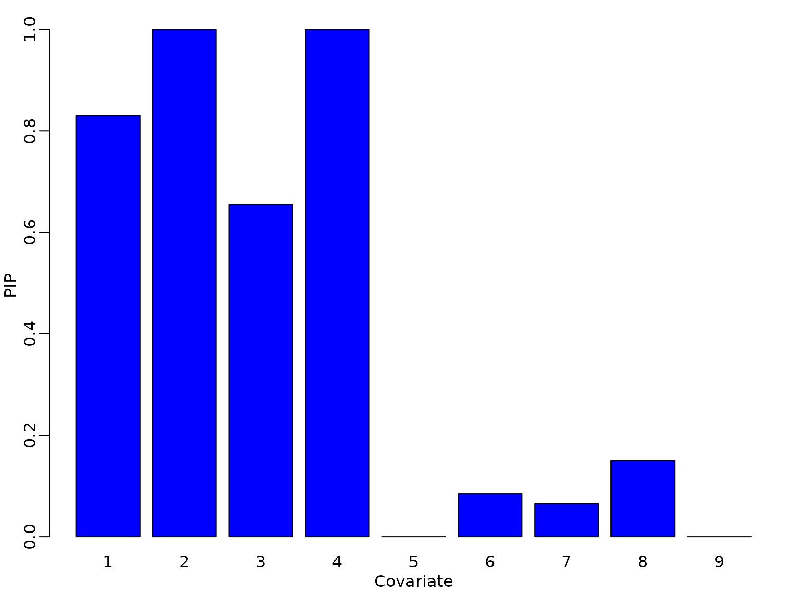

Chapter 12: Model Assessment and Predictive Model Checking
Chapter12.RmdSection 12.1: Beyond classical Bayesian model comparison
Section 12.1.1: Schwarz criterion and BIC
Example 12.1: Labor market data: Bayesian variable selection using BIC
We return to the probit analysis of Example 11.11 and run variable selection using the Schwarz criterion instead of the marginal likelihood. We first implement this approach.
modsel_probit_BIC <- function(y, X, burnin = 1000L, M = 5000L) {
N <- length(y)
p <- ncol(X)
gamma_post <- matrix(0L, nrow = M, ncol = p,
dimnames = list(NULL, colnames(X)))
acc <- integer(length = M)
gamma <- rep(1L, length.out = p)
mod0 <- glm(y ~ X, family = binomial(link = "probit"))
SC_old <- logLik(mod0) - log(N) * (p + 1) / 2
for (m in seq_len(burnin + M)) {
gamma_proposed <- gamma
j <- sample(1:p, size = 1)
gamma_proposed[j] <- 1 - gamma[j]
X_gamma <- X[, gamma_proposed == 1]
model <- glm(y ~ X_gamma, family = binomial(link = "probit"))
SC_proposed <- logLik(model) - log(N) * (sum(gamma_proposed) + 1) / 2
# Compute acceptance probability and decide on acceptance
log_acc <- SC_proposed - SC_old
if (log(runif(1)) < log_acc) {
gamma <- gamma_proposed
SC_old <- SC_proposed
accept <- 1L
} else {
accept <- 0L
}
if (m > burnin) {
gamma_post[m - burnin, ] <- gamma
acc[m - burnin] <- accept
}
}
return(list(gamma_post = gamma_post, acc = acc))
}Next we load the data and add 5 irrelevant, standard normal regressors as in Example 11.11. Then we run the algorithm.
library("BayesianLearningCode")
data("labor", package = "BayesianLearningCode")
y <- labor$income_1998 == "zero"
N <- length(y)
X_unemp <- with(labor, cbind(female = female,
age18 = 1998 - birthyear - 18,
wcollar = wcollar_1997,
unemp97 = income_1997 == "zero")) # regressor matrix
p_irrel <- 5
set.seed(seed)
X <- cbind(X_unemp, matrix(rnorm(p_irrel * N), ncol = p_irrel))
p <- ncol(X)
colnames(X)[ncol(X_unemp) + (1:p_irrel)] <-
paste0("irrel", seq_len(p_irrel))
M <- 20000 / mcmcspeedup
res <- modsel_probit_BIC(y, X, M = M)We determine the number of models visited during MCMC, the average model complexity, i.e., the average number of covariates included in the model, and show the posterior inclusion probabilities.
if (pdfplots) {
pdf("12-1_1.pdf", width = 5, height = 6)
}
par(mfrow = c(1, 1), mar = c(2.5, 2.5, 1.5, .5), mgp = c(1.5, .5, 0))
gammas <- unique(res$gamma_post)
nrow(gammas)
#> [1] 21
k_gamma <- rowSums(res$gamma_post)
mean(k_gamma)
#> [1] 3.7335
# PIPs
colMeans(res$gamma_post)
#> female age18 wcollar unemp97 irrel1 irrel2 irrel3 irrel4 irrel5
#> 0.8995 1.0000 0.7020 1.0000 0.0320 0.0085 0.0065 0.0710 0.0140
barplot(colMeans(res$gamma_post), col = "blue", names.arg = 1:p,
xlab = "Covariate", ylab = "PIP")
To determine the models visited most often we re-use a function which we defined in Chapter 11.
number_draws <- function(gamma_post, models) {
sapply(1:nrow(models), function(j)
sum(apply(gamma_post, 1, function(x) identical(x, models[j,]))))
}
n_gamma <- number_draws(res$gamma_post, gammas)
io <- order(n_gamma, decreasing = TRUE)
knitr::kable(cbind(gammas, phat_gamma = n_gamma / M)[io[1:5], ],
digits = c(rep(0, p), 4))| female | age18 | wcollar | unemp97 | irrel1 | irrel2 | irrel3 | irrel4 | irrel5 | phat_gamma |
|---|---|---|---|---|---|---|---|---|---|
| 1 | 1 | 1 | 1 | 0 | 0 | 0 | 0 | 0 | 0.5915 |
| 1 | 1 | 0 | 1 | 0 | 0 | 0 | 0 | 0 | 0.2060 |
| 0 | 1 | 0 | 1 | 0 | 0 | 0 | 0 | 0 | 0.0580 |
| 1 | 1 | 1 | 1 | 0 | 0 | 0 | 1 | 0 | 0.0380 |
| 0 | 1 | 1 | 1 | 0 | 0 | 0 | 0 | 0 | 0.0255 |
Section 12.2: Comparative model assessment through predictive information criteria
Section 12.2.2: Akaike information criterion (AIC)
Example 12.2: U.S. GDP data: Choosing the model order via AIC and BIC
We need to re-load the function which creates the design matrix.
ARdesignmatrix <- function(dat, p = 1, conditioninglength = p) {
d <- p + 1
N <- length(dat) - p
Xy <- matrix(NA_real_, N, d)
Xy[, 1] <- 1
for (i in seq_len(p)) {
Xy[, i + 1] <- dat[(p + 1 - i) : (length(dat) - i)]
}
Xy[(1 + conditioninglength - p):N, , drop = FALSE]
}Let’s load the data and compute log returns.
Now we compute five OLS estimates and the corresponding AICs and BICs.
AIC <- BIC <- rep(NA_real_, 5)
for (i in seq_along(AIC)) {
y <- tail(logret, -4)
p <- i - 1 # lag length
d <- i + 1 # total number of parameters
N <- length(y) # number of data points used for estimation
Xy <- ARdesignmatrix(logret, p, conditioninglength = 4)
fit <- lm(y ~ Xy - 1)
betahat <- coef(fit)
sigma2hat <- sum(resid(fit)^2) / length(y)
minus2timesloglikmax <- N * (1 + log(2 * pi)) + N * log(sigma2hat)
AIC[i] <- minus2timesloglikmax + 2 * d # equals bult-in AIC(fit)
BIC[i] <- minus2timesloglikmax + log(N) * d # equals built-in BIC(fit)
}
knitr::kable(rbind(AIC, BIC), digits = 2)| AIC | -1808.61 | -1828.87 | -1839.65 | -1837.66 | -1836.24 |
| BIC | -1801.15 | -1817.68 | -1824.72 | -1819.01 | -1813.86 |
Example 12.6: CHF exchange rate data: Testing normal vs. t using DIC
Let’s load the data first and make some space for the draws under the three models.
data("exrates", package = "stochvol")
y <- 100 * diff(log(exrates$USD / exrates$CHF))
X <- 1
N <- length(y)
draws <- vector("list", 3)Under the zero-mean Gaussian model, the posterior of is inverse gamma, and we can easily draw from it.
set.seed(seed)
c0 <- 2.5
C0 <- 1.5
SSR <- sum(y^2)
cN <- c0 + N / 2
CN <- C0 + SSR / 2
# number of draws
M <- 1e6 / mcmcspeedup
# thinning to save some computer memory
thin <- ceiling(10 / mcmcspeedup)
draws[[1]]$sigma2s <- rinvgamma(M / thin, cN , CN)
draws[[1]]$nus <- InfUnder the t distribution with 7 degrees of freedom, the posterior of is not available in closed form, but we can draw from it using data augmentation.
burnin <- 100
# fix df
nu <- 7
# allocate space for storing the draws
draws[[2]]$sigma2s <- rep(NA_real_, M / thin)
draws[[2]]$nus <- rep(nu, M / thin)
draws[[2]]$ws <- matrix(NA_real_, nrow = M / thin, ncol = N)
# starting value for w
w <- rep(1, N)
# pre-compute cN
cN <- c0 + N / 2
# log likelihood
loglik <- function(y, sigma2, nu) {
if (is.finite(nu)) {
length(y) * (lgamma((nu + 1) / 2) - lgamma(nu / 2) - .5 * log(nu)) -
(nu + 1) / 2 * sum(log(1 + y^2 / nu / sigma2))
} else {
sum(dnorm(y, 0, sqrt(sigma2), log = TRUE))
}
}
for (m in 1:(burnin + M)) {
# sample sigma^2 from its full conditional (S-DA)
eps <- sqrt(w) * y
CN <- C0 + crossprod(eps) / 2
sigma2 <- rinvgamma(1, cN, CN)
# sample w (W-DA)
r <- eps^2 / (w * sigma2)
w <- rgamma(length(eps), (nu + 1) /2, (nu + r) / 2)
# store the results
if (m > burnin && (m - burnin) %% thin == 0L) {
draws[[2]]$sigma2s[(m - burnin) / thin] <- sigma2
draws[[2]]$ws[(m - burnin) / thin, ] <- w
}
}For sampling also the degrees of freedom under an exponential prior, we re-run the sampler from Example 8.16, but this time without an intercept.
# fix tuning parameter for MH
cnu <- 0.3
# fix prior hyperparameters
lambda <- 1 / 7
# allocate space for storing the draws
draws[[3]]$nus <- draws[[3]]$sigma2s <- rep(NA_real_, M / thin)
draws[[3]]$ws <- matrix(NA_real_, nrow = M / thin, ncol = N)
# starting value for log(nu) and w
w <- rep(1, N)
nu <- 7
accepts <- 0L
for (m in 1:(burnin + M)) {
# sample sigma^2 from its full conditional (S-DA)
eps <- sqrt(w) * y
CN <- C0 + crossprod(eps) / 2
sigma2 <- rinvgamma(1, cN, CN)
# sample nu (N-MH)
nuprop <- exp(rnorm(1, log(nu), cnu))
logR <- loglik(y, sigma2, nuprop) -
loglik(y, sigma2, nu) +
dexp(nuprop, lambda, log = TRUE) -
dexp(nu, lambda, log = TRUE) +
log(nuprop) -
log(nu)
if (log(runif(1)) < logR) {
nu <- nuprop
if (m > burnin) accepts <- accepts + 1L
}
# sample w (W-DA)
r <- eps^2 / (w * sigma2)
w <- rgamma(length(eps), (nu + 1) /2, (nu + r) / 2)
# store the results
if (m > burnin && (m - burnin) %% thin == 0L) {
draws[[3]]$sigma2s[(m - burnin) / thin] <- sigma2
draws[[3]]$nus[(m - burnin) / thin] <- nu
draws[[3]]$ws[(m - burnin) / thin, ] <- w
}
}We can now estimate the DIC from the draws. First, we define the deviance function .
D_nonvec <- function(y, sigma2, nu) -2 * loglik(y, sigma2, nu)
D <- Vectorize(D_nonvec, c("sigma2", "nu"))Now, we estimate the average deviance, the deviance of the posterior averages, the effective number of parameters, and finally, DIC.
res <- matrix(NA_real_, 3, 4)
colnames(res) <- c("DIC", "avgD", "Davg", "pd")
for (i in 1:nrow(res)) {
res[i, "avgD"] <- mean(D(y, draws[[i]]$sigma2s, draws[[i]]$nus))
res[i, "Davg"] <- D(y, mean(draws[[i]]$sigma2s), mean(draws[[i]]$nus))
res[i, "pd"] <- res[i, "avgD"] - res[i, "Davg"]
res[i, "DIC"] <- res[i, "avgD"] + res[i, "pd"]
}
knitr::kable(res, digits = c(0, 0, 0, 1))| DIC | avgD | Davg | pd |
|---|---|---|---|
| 6907 | 6906 | 6905 | 1.0 |
| 6269 | 6266 | 6264 | 2.4 |
| 6379 | 6375 | 6370 | 4.6 |
For the Gaussian model (only), we can compute the DIC in closed form.
cN <- c0 + N / 2
CN <- C0 + SSR / 2
Davg <- N * log(2 * pi * CN / (cN - 1)) + (cN - 1) * SSR / CN
avgD <- N * (log(2 * pi * CN) - digamma(cN)) + SSR * cN / CN
pd <- avgD - Davg
# Explicityly: N * (log(cN - 1) - digamma(cN)) + SSR / CN
DIC <- avgD + pd
# N * log(2 * pi * CN * (cN - 1)) - 2 * N * digamma(cN) + (cN + 1) * SSR / CN
knitr::kable(cbind(DIC, avgD, Davg, pd))| DIC | avgD | Davg | pd |
|---|---|---|---|
| 6906.922 | 6905.925 | 6904.927 | 0.997449 |
Example 12.7: CHF exchange rate data: Testing normal vs. Student t using hierarchical DIC
Because we also stored the weights, we can use the samples from above to compute conditional and augmented DICs. To do so, we first define the log conditional likelihood. and the log augmented (“complete-data”) likelihood.
logcondlik <- function(y, sigma2, nu, w) {
sum(dnorm(y, 0, sqrt(sigma2 / w), log = TRUE))
}
logauglik <- function(y, sigma2, nu, w) {
logcondlik(y, sigma2, nu, w) + sum(dgamma(w, nu / 2, nu / 2, log = TRUE))
}Now we can compute the conditional and the augmented DIC.
res <- matrix(NA_real_, 2, 4)
colnames(res) <- c("DIC_C", "pd_C", "DIC_A", "pd_A")
for (i in 1:nrow(res)) {
d <- draws[[i + 1]]
# Evaluate the log conditional likelihood at all posterior draws
alllogcondlik <- sapply(seq_along(d$sigma2s), function(j) {
logcondlik(y, d$sigma2s[j], d$nus[j], d$ws[j, ])
})
# Compute the average conditional deviance
avgcondD <- -2 * mean(alllogcondlik)
# Evaluate the log augmented likelihood at all posterior draws
alllogauglik <- sapply(seq_along(d$sigma2s), function(j) {
logauglik(y, d$sigma2s[j], d$nus[j], d$ws[j, ])
})
# Evaluate the unnormalized log posterior
alllogpost_unnormalized <- alllogauglik +
dinvgamma(d$sigma2s, c0, C0, log = TRUE) + dexp(d$nus, lambda, log = TRUE)
# Find the index of the posterior draw with highest joint posterior density
MAPind <- which.max(alllogpost_unnormalized)
# Evaluate the conditional deviance at the MAP
estcondD <- -2 * alllogcondlik[MAPind]
# Compute conditional pd and conditional DIC
res[i, "pd_C"] <- avgcondD - estcondD
res[i, "DIC_C"] <- 2 * avgcondD - estcondD
# Compute the average augmented deviance
avgaugD <- -2 * mean(alllogauglik)
# Evaluate the augmented deviance at the MAP
estaugD <- -2 * alllogauglik[MAPind]
# Compute augmented pd and augmented DIC
res[i, "pd_A"] <- avgaugD - estaugD
res[i, "DIC_A"] <- 2 * avgaugD - estaugD
}
knitr::kable(res)| DIC_C | pd_C | DIC_A | pd_A |
|---|---|---|---|
| 6153.280 | 30.5282 | 10834.66 | 358.1104 |
| 5948.089 | -132.5316 | 11745.58 | 1019.5312 |